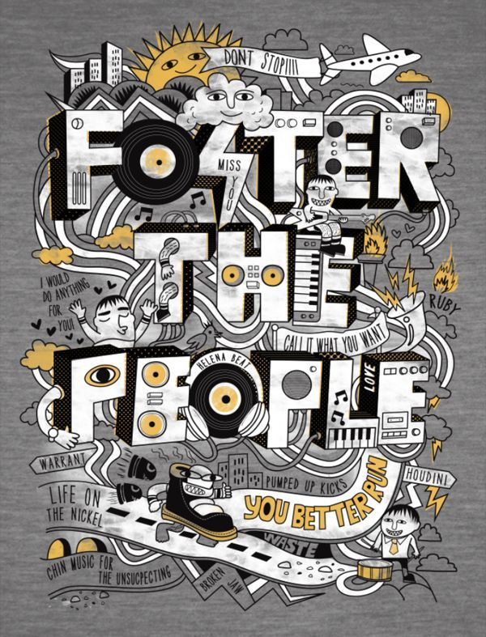

INICIO
NOMBRE: Leslie Gabriela Melendez Merma
EDAD: 16 AÑOS
LUGAR DE NACIMIENTO: Puno
ANIMES FAVORITOS
Shingeki no kyojin
Kimetsu no yaiba
Peliculas de estudio Ghibli
Banana fish
SK8 infinity
Jujutsu Kaisen
Entre otros
MUSICA
Los generos musicales como pop, rock e indie pop y k-pop son de mi preferencia.
Suelo seguir a grupos como Foster the people, Artic monkeys, Mamamoo, entre otros artistas.